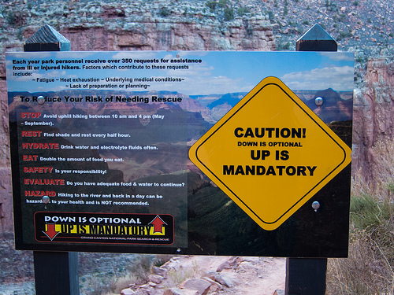

Skills & Safety • Philippines
Wilderness First Aid Basics
Prevent emergencies by planning and checking conditions. For injuries, keep the person safe, seek help, and contact emergency responders or trained guides. Do not attempt care beyond your training.
Helpful reminders
- Check official park announcements and local weather before visiting.
- Follow posted rules and instructions from park staff or guides.
- Bring a basic first aid kit and necessary personal medications.
- Keep emergency contact numbers accessible.
- Stay calm and assess the surroundings before helping an injured person.
- Inform park staff or guides immediately when an emergency occurs.
- Avoid moving someone with a suspected serious injury unless they are in immediate danger.
- Respect nature and local communities; take all trash with you.